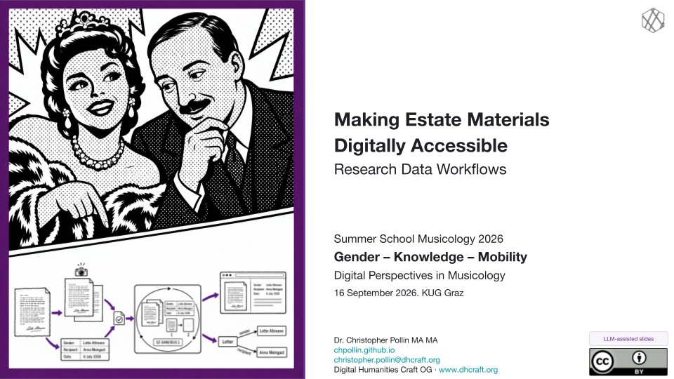
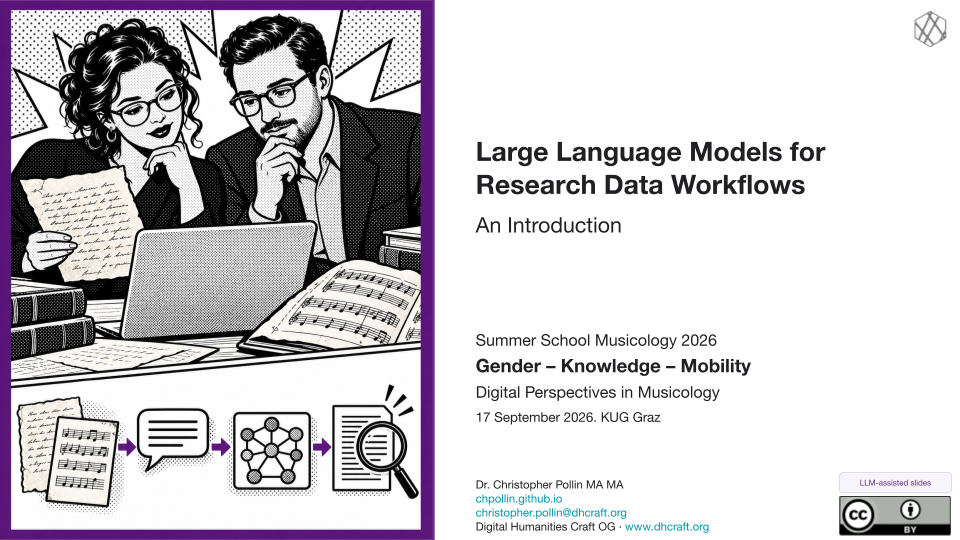
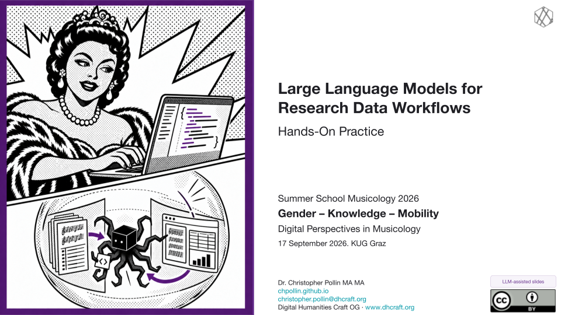

Research Data Workflows
and LLMs

Session 1 · Making Estate Materials Digitally Accessible
Research Data Workflows in Stefan Zweig Digital
Lecture notes written with AI assistance.
Explore how Stefan Zweig Digital turns estate materials into accessible research data through metadata standards and digital workflows.
Learning objectives
- Understand what research data is and why it matters.
- Understand research data workflows and the role of metadata standards.
- Understand the principles of the Semantic Web and Linked Open Data.
Hands-on materials
What Counts as Research Data, and Who Decides?
Discuss the source and the questions in the slides. No download is required.
Reading an XML Metadata Record
Read the XML example in the slides. No additional file is required.
Describe the “Schulnachricht” in XML
Use the source image and the template in the slides. Save your description as metadata.xml for the next exercise.
{kind=link}
From XML to IIIF with Python
Continue with your XML description. The package includes the Schulnachricht image, example XML, a script and instructions.
Encode the Schulnachricht in TEI XML with LLM Assistance
Use the slide prompt, check the transcription against the image and save schulnachricht.xml.
Represent a Source Image in RDF with LLM Assistance
Use the same image and the slide prompt. Save the generated Turtle as source-draft.ttl.
Improve the RDF Model with LLM Assistance
Continue with your source-draft.ttl and the Schulnachricht image. Review the proposed changes using the slides.
Appendix exercises for Session 1
Explore IIIF Manifests in Mirador
Appendix exercise. The manifest links and comparison questions are in the slides.
Analyse a Dublin Core Record
Appendix exercise. Use the Dublin Core record and questions in the slides.
Optional preparation and reference materials for Session 1
- Optional preparation · PDF pages as images · ZIP
Standalone conversion practice; not required for the Session 1 exercises. - Original course materials on Google Drive

Session 2 · Large Language Models for Research Data Workflows
An Introduction
Lecture notes written with AI assistance. Work in progress. Sections may be incomplete and are being revised.
Explore how LLMs can help extract, structure and verify research data through practical work with historical sources.
Learning objectives
- Develop a basic understanding of large language models (LLMs).
- Understand the fundamentals of prompt and context engineering.
- Gain initial hands-on experience using LLMs in research data workflows.
Hands-on materials
Transcribe a Facsimile with Gemini 3.8 Flash
Two Zweig facsimiles for the demonstration and your transcription exercise.
Exploring Research Data with LLMs
Inspect 12 statements from 6 documents and 3 places, then create an interactive timeline as a chat artifact. Follow the prompts in the slides.
From Facsimiles to TEI XML
Start with UAKUG_NIM_005_137_3.pdf (2 scans). Use an LLM chat with PDF/image support; an AI harness is optional. Create simple TEI XML, check a passage and a metadata value against the scans, and check XML syntax. Keep your TEI and matching images for the final project. Additional documents are optional.
- Source PDFs · ZIP
- Prepared scan images · PNG ZIP
Use these if your chat needs images; PDF conversion is optional. - Instructions, prompts and TEI template · ZIP
Optional preparation and reference materials for Session 2
{kind=link}
{kind=link}

Sessions 3 and 4 · Large Language Models for Research Data Workflows
Hands-On Practice
Lecture notes written with AI assistance. Work in progress. Sections may be incomplete and are being revised.
Explore M³GIM, try an AI harness with a small CSV, then use Promptotyping to build a digital edition or research dashboard.
Learning objectives
- Use LLMs for coding and build small research tools through Promptotyping.
- Understand AI agents and the role of an AI harness.
- Apply context and knowledge engineering to research tasks.
- Practise agentic engineering by inspecting tool use, checking results and refining instructions.
Hands-on materials
Exploring M³GIM
Investigate the prototype, inspect source evidence and turn a gap into a research requirement. No download is required.
AI Harness and M³GIM Data
Use the 12-statement CSV to inspect data and build one interactive view with plain HTML, CSS and JavaScript. Run it locally; use no libraries, frameworks or build tools. Prompts and preview instructions are in the slides.
Promptotyping Project: A Small Digital Edition or Research Dashboard
Choose a research question and create knowledge/data.md, knowledge/research.md and knowledge/specification.md. Follow the slides to plan, implement, verify and refine both code and project knowledge. Work in an AI harness, or upload files to a chat and save its outputs into your project folder.
Technical scope: Build a local static web application using only plain HTML, CSS and JavaScript. No libraries, frameworks, package installations, build tools, backend, database or external services. Run it via a local static server. Start with one main view and one core interaction.
- Edition · source PDFs · ZIP
Start from PDFs, reuse any existing transcriptions and develop TEI XML for a small digital edition. - Dashboard · full published M³GIM dataset · JSON-LD
Dataset scope, source revision and licence · TXT
The complete published archive graph for your dashboard; facsimile files are separate.
Optional preparation and reference materials for Sessions 3 and 4
- Final project · reference transcriptions, TEI and page images · ZIP
Reference package contents and reuse · Markdown
Optional fallback with seven documents and 40 scans. Use your own work where available. - M³GIM exploration · single-record JSON-LD example
Example explanation and source - Optional preparation · run PDF conversion in VS Code · ZIP
- Optional preparation · delegate PDF conversion to an AI harness · ZIP
Both conversion packages contain the same script and seven PDFs. - Optional project example · Bayreuth Cast Explorer prompts
Use with suitable programme pages from the source PDFs. - Optional project example · poster text · TXT
Text input for an extraction or edition experiment. - Optional project example · place lookup · CSV
A separate place-data example; verify matches before combining it with another dataset. - Optional project example · person index · XLSX
A separate exercise for inspecting and structuring person data. - Optional examples · collected files · ZIP
The examples above plus the Schulnachricht and Zweig images; choose only the files relevant to your project.